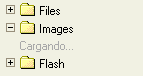

El pánel de carpetas, contiene la "vista de arbol" de las carpetas por las que se puede navegar, las carpetas, son una manera de organizar mejor los archivos.
Se le llama "vista de arbol", por que se tienen las carpetas representadas jerarquicamente como las ramas de un arbol. Usa la misma representación gráfica que muchos sistemas operativos modernos.
Para abrir una carpeta y revelar sus carpetas "hijas", simplemente haga click en el signo "más" ( ) en frente de la misma. Si el signo "más" no está presente, la carpeta no tiene carpetas hijas que puedan desplegarse.
) en frente de la misma. Si el signo "más" no está presente, la carpeta no tiene carpetas hijas que puedan desplegarse.
Vea "Cargado bajo demanda " al final de la pagina para un mejor entendimiento de como son cargadas las carpetas.
Para cerrar una carpeta, y por ende esconder sus carpetas "hijas", simplemente dé click en el signo "menos" ( ) en frente de la misma.
) en frente de la misma.
Para seleccionar una carpeta y por ende convertirla a "la carpeta actual" para CKFinder, simplemente dé click en el nombre de la carpeta o en su icono. La carpeta seleccionada tendrá un color de fondo diferente.
Es posible utilizar operaciones avanzadas en una carpeta, haciendo uso de su "Menú de contexto", las siguientes opciones estan disponibles:

Nota: Algunos botones de un menú de contexto podrían estar deshabilitados, dependiendo de los ajustes asignados por el administrador del sistema.
Para crear una carpeta "hija" dentro de una carpeta ya existente, solamente haga clic sobre la opción "Nueva Carpeta" del menú de contexto. Una ventana de dialogo aparecerá en donde deberá escribir el nombre de la nueva Carpeta, luego confirme la operación.
No todos los caracteres pueden ser usados para establecer un nombre de carpeta, debido a limitaciones en los sistemas donde CKFinder se ejecuta. Por ejemplo, los siguientes caracteres, no pueden usarse para dar nombre a carpetas ni archivos: \ / : * ? " < > |
Para renombrar una carpeta, solo dé click en la opción "Renombrar" del menú de contexto. Una ventana de dialogo aparecerá conteniendo el nombre actual de la carpeta, ahí deberá escribir el nuevo nombre que desea asignar a la carpeta, luego confirme la operación.
No todos los caracteres pueden ser usados para establecer un nombre de carpeta, debido a limitaciones en los sistemas donde CKFinder se ejecuta. Por ejemplo, los siguientes caracteres, no pueden usarse para dar nombre a carpetas ni archivos: \ / : * ? " < > |
Atención: Al renombrar una carpeta, las ligas o inserciones de medios disponibles en otras paginas que apunten a archivos o carpetas dentro de aquella que fue renombrada podrían quedar "quebradas" y por lo mismo no disponibles más. Asi que sea cauteloso cuando use esta caracteristica.
Para borrar una carpeta, incluyendo su contenido, solo dé click sobre la opción "Borrar" del menú de contexto. Un mensaje de confirmación aparecerá para asegurarse de que realmente desea eliminar dicha carpeta.
Atención: Al renombrar una carpeta, las ligas o inserciones de medios disponibles en otras paginas que apunten a archivos o carpetas dentro de aquella que fue renombrada podrían quedar "quebradas" y por lo mismo no disponibles más. Asi que sea cauteloso cuando use esta caracteristica.
La diferencia más importante entre CKFinder y la "vista de arbol" que se encuentra en los sistemas operativos modernos, es que los folders se cargan "bajo demanda", esto significa que CKFinder no carga todo el arbol al inicio, sino que solo carga un pequeño subconjunto de el cuando se abre la carpeta, este es un requerimiento de aplicaciones avanzadas para web como lo es CKFinder.like CKFinder.
Para indicar que las carpetas se están cargando, la etiqueta "Cargando..." podría aparecer cuando se intente abrir una carpeta.

La etiqueta desaparecerá automaticamente una vez que la carga de las carpetas haya terminado, una vez cargada, la etiqueta no aparecera más para esa carpeta.